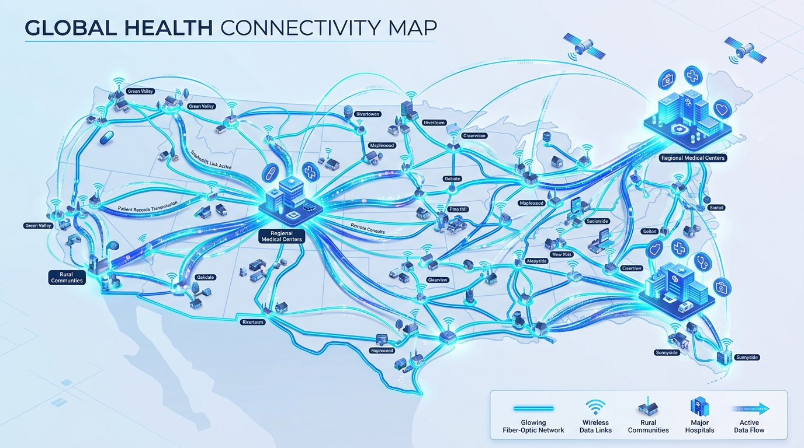

Overcoming Geographic & Physical Isolation
For decades, living in remote rural territories or low-income municipal zip codes dictated the quality and timeliness of medical attention. Approximately 27% of adults live with a functional disability, facing prohibitive barriers including transit availability, long transit times, and inaccessible clinics.
- No Physical Travel Required: Patients consult top specialists regardless of weather, transit infrastructure, or physical mobility restrictions.
- Linguistic & Cultural Interpretation: Digital portals incorporate instant real-time interpretation for non-native language speakers and ASL video support.
- Timely Intervention: Reduces catastrophic disease progression by catching conditions weeks before an in-person opening would become available.

Measurable Gains in Healthcare Delivery
Empirical data demonstrates drastic reductions in appointment delays and a steep surge in adoption across historically underserved populations.
Specialist Appointment Wait Times
Comparing In-Person Clinic Booking vs. Virtual Teleconsultation (Days)
Rural & Underserved Adoption Growth
Longitudinal Percentage of Virtual Healthcare Consultations (2019–2025)
Empowering the Doctor–Patient Relationship
Virtual visits allow physicians to observe patients in their natural home environment, uncovering social determinants of health (housing stability, food security, medication storage) that remain invisible in traditional office visits.
To guarantee that digital solutions do not inadvertently widen inequities for those without high-speed fiber or digital devices, modern health systems apply the Telemedicine Equity Framework (TEF) across four foundational pillars:
Low-bandwidth audio-only backups and intuitive ADA-compliant interfaces.
Municipal broadband subsidies and community telemedicine access kiosks.
Cross-jurisdictional licensing parity and Medicaid telehealth reimbursement.
Digital navigators and local multilingual digital literacy workshops.
Center for Health Care Strategies (CHCS)
CHCS is a nonprofit policy center dedicated to improving the health of low-income Americans. Explore their policy briefs on telemedicine financing, state Medicaid coverage expansions, and interventions dismantling digital health inequities in complex patient populations.